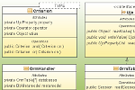
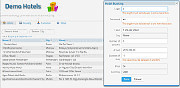
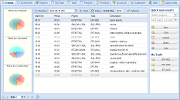

The Ujorm is an open source Java small library
which provides non-traditional objects based on the key-value architecture to open up
new exciting opportunities for writing efficient code.
This library offers a unique ORM module designed for rapid Java development with great performance and a small footprint.
The key features are type safe database queries, relation mapping by Java code, no entity states
and a memory overloading protection cache.
Try it!
Features
| Ujorm ORM a module for easy-to-use object-relation mappings | Performance great performance including a high speed XML serialization | ||
| Easy to use short learning, high object reusability, open source | Documentation detailed documentation including samples of code. |
Why a new ORM mapping?

The Ujorm (original name was UJO Framework) is designed primarily for the rapid Java development based on a relation database.
{kind=link}
- java compiler can discover a syntax error of Ujorm database query similar like 4GL database languages
- easy to configure the ORM model by java source code, optionally by annotations and a XML file
- great performance, some types of SELECT query are very fast in comparison to its competitors
- lazy loading or the one request data loading of relations are supported optionaly as a fetch strategy
- database tables, columns and indexes can be optionally updated according to Java meta-model in the run-time
- no confusing proxy or binary modified business objects
- very lightweight framework with no library dependencies in the run-time
Some other features
- batch SQL statements for more rows like INSERT, UPDATE and DELETE are supported
- features LIMIT and OFFSET are available from the API
- nested transactions are supported using the partially implemented JTA
- resources for ORM mapping can be a database table, view or native SQL SELECT
- subset of table columns on SELECT can be specified for the SQL statement
- JDBC query parameters are passed by a 'question mark' notation to the PreparedStatement for a high security
- stored database procedures and functions are supported
- all persistent objects are based on the interface OrmUjo, namely on the implementation OrmTable
- internal object cache is based on the WeakHashMap class so that large transactions does not cause any OutOfMemoryException
- database indexes are created by the meta-model, added support for unique, non-unique indexes including the composed one
- transactions can be managed by the Spring transaction manager
Sample of usage:
See how to create a database and to how to INSERT an Order with two Items into related database tables:
Order order = new Order();
order.setDate(new Date());
order.setNote("My order");
Item item = new Item();
item.setOrder(order);
item.setNote("Yellow table");
Session session = ormHandler.createSession();
Transaction transaction = session.beginTransaction();
session.save(order);
session.save(item);
transaction.commit();
session.close();
The next example show how to select data from database using conditions implemented by the Criterion class.
Note how two Criterions can be joined to a binary tree:
Criterion<Item> crn1, crn2, criterion;
crn1 = Item.ID.whereGe(1L);
crn2 = Item.ORDER.add(NOTE).whereEq("My order");
criterion = crn1.and(crn2);
Session session = ormHandler.createSession();
for (Item item : session.createQuery(criterion)) {
Date created = item.getOrder().getDate();
System.out.println( item + " : " + created );
}
session.close();
using the similar generated SQL command:
SELECT * FROM item JOIN order ON order.id = item.id_order WHERE item.id >= 1 AND order.note = 'My order' ;where both parameters are passed by a 'question mark' notation for a better security. And how to get meta-data for a 'description' property of the Order?
MetaColumn col = ormHandler.findColumnModel(Order.NOTE);
String msg
= "DB name: " + col.getFullName() + '\n'
+ "Comment: " + col.getComment() + '\n'
+ "Length : " + col.getMaxLength() + '\n'
+ "NotNull: " + col.isMandatory() + '\n'
+ "Primary: " + col.isPrimaryKey() + '\n'
+ "Dialect: " + col.getDialectName();
System.out.println(msg);
Prints the text report on the console output:
DB name: db1.ord_order.NOTE Comment: Description of the Order Length : 128 NotNull: true Primary: false Dialect: H2Dialect
Reference projects
Projects based on the Ujorm ORM framework:
-  The Demo-Hotels is an open-source simple web application created to learn the Ujorm framework. A graphical interface is rendered using a Apache Wicket framework. The application provides booking for selected hotels to registered customers. There is available a live demo for testing.
-  The Inspectime is a server side Time tracking application based on the Ext GWT and Ujorm framework. The key features are: Live monitoring of employees' work, real-time reporting, rights management and projects & products based structure.
- The eCall is a complete software solution for management of corporate telecommunications - especially for a modern call center. It enables easy organization, management and automated operation of all telecommunications. See Ujorm development Interview.
- The system ÚZEI is used primarily for collecting information about organic agriculture in a region. The application is designed for administrators and inspectors of monitoring organizations. Inspectors enter the data through a web interface from office, but also from the field during the inspections of organics farms.
- Do you wish to make reference to your application, built on Ujorm? Send us a link to your project to the email address help.ujorm@gmail.com .
Similar frameworks:
Here are some links to similar open-source frameworks with the type-safe queries:
- jOOQ - light database mapping library where plain SQL can be constructed using jOOQ objects and code generated from a schema. This prevents syntax errors
- SimpleORM - object relational mapping system that avoids exotic technologies such as byte code generation, where queries can be specified in terms of Java objects, object identity is aligned with database keys.
- Empire-db - relational data persistence component which allows database vendor independent dynamic query definition with a special focus on compile-time safety, reduced redundancies and improved developer productivity.
- Querydsl - a framework which enables the construction of statically typed SQL-like queries
Support:
- Forum: discussion forums
- FAQ: http://ujorm.org/dokuwiki/
- Blog: http://ujorm.blogspot.com/
- Contact: help.ujorm@gmail.com